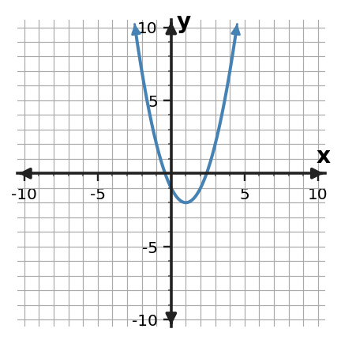
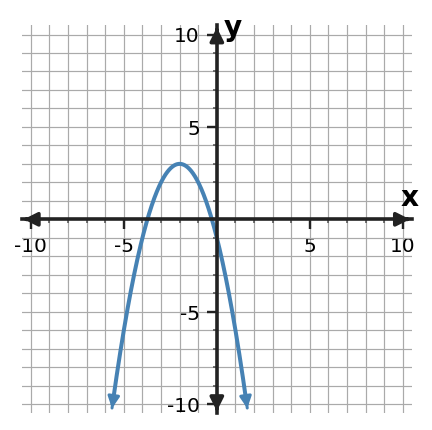

Algebra Practice 1.3 :::: Set 2
1. Classify $y=-2x+5$ as linear, quadratic, exponential, or absolute value and identify the equation feature that supports your choice.
2. Classify $y=(x-1)^2+3$ as linear, quadratic, exponential, or absolute value and identify the equation feature that supports your choice.
3. Classify $y=4(2^x)$ as linear, quadratic, exponential, or absolute value and identify the equation feature that supports your choice.
4. Classify $y=|x+3|-2$ as linear, quadratic, exponential, or absolute value and identify the equation feature that supports your choice.
5. Classify the function family and cite evidence from the pattern.
| x | y |
|---|---|
| 0 | 1 |
| 1 | 5 |
| 2 | 9 |
| 3 | 13 |
6. Classify the function family and cite evidence from the pattern.
| x | y |
|---|---|
| 0 | 2 |
| 1 | 3 |
| 2 | 6 |
| 3 | 11 |
7. Classify the function family and cite evidence from the pattern.
| x | y |
|---|---|
| 0 | 3 |
| 1 | 6 |
| 2 | 12 |
| 3 | 24 |
8. Classify the function family and cite evidence from the pattern.
| x | y |
|---|---|
| -2 | 4 |
| -1 | 3 |
| 0 | 2 |
| 1 | 3 |
| 2 | 4 |
9. The outputs follow a linear pattern: 4, 7, 10, 13. Continue with two more outputs and identify the constant-change evidence.
10. The outputs follow a quadratic pattern: 4, 9, 16, 25. Predict the next two outputs and describe the square-number structure you used.
11. The outputs follow an exponential pattern: 2, 6, 18, 54. Generate the next two outputs and name the repeated multiplicative factor.
12. The outputs follow an absolute value pattern: 4, 3, 2, 1, 2. Continue the sequence through two more outputs and describe its movement away from the turning point.
13. Classify the graph by function family.

14. Describe one visible feature that supports the classification.

15. Name one equation form that could belong to the same family.

16. Explain why a different family would not fit this graph.

17. A savings account receives exactly 40 dollars each month. Select the best function family and connect your choice to the constant additive change.
18. The area of a circular garden is modeled from its radius. Select the best function family and connect your choice to how area depends on radius.
19. A population triples each year. Select the best function family and connect your choice to the repeated growth factor.
20. A machine reports the distance of a temperature from a target value based on the signed temperature difference. Select the best function family and connect your choice to distance from a fixed value.
21. A student says the relationship is exponential because the outputs increase faster each row. Critique the claim.
| x | y |
|---|---|
| 0 | 2 |
| 1 | 3 |
| 2 | 6 |
| 3 | 11 |
22. A student says the relationship is linear because every row increases. Critique the claim.
| x | y |
|---|---|
| 0 | 3 |
| 1 | 6 |
| 2 | 12 |
| 3 | 24 |
23. A graph has two straight rays that meet at one point. A student calls it quadratic because it has a turning point. What evidence should be checked, and which family is more likely?
24. An equation is $y=5(1.4)^x$. A student calls it quadratic because its graph curves upward. Critique the classification.